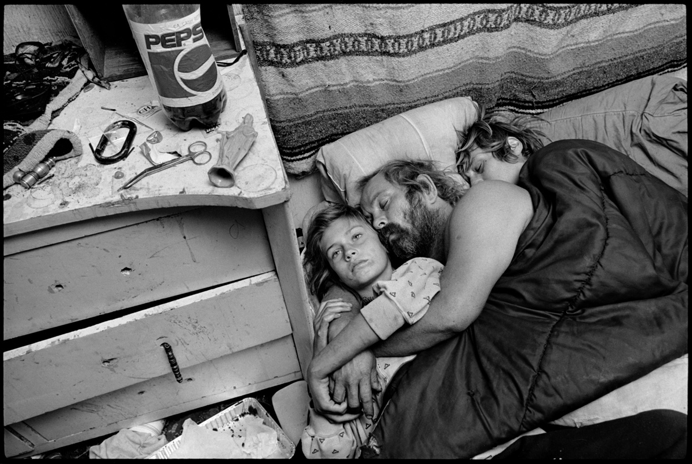
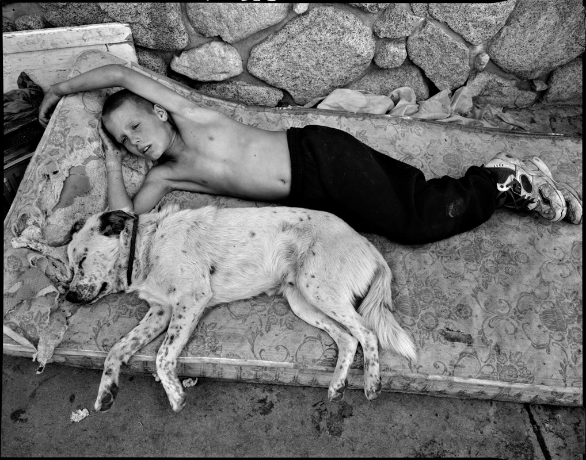
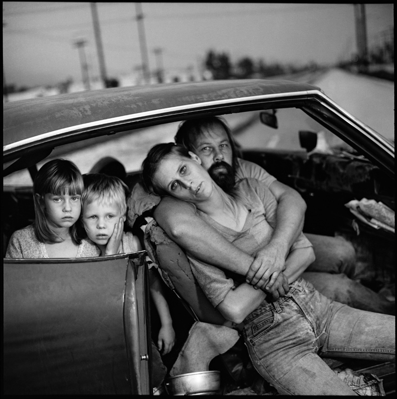

The Blank Stare of Crissy Damm
Photo of the Damm family, taken by Mary Ellen Mark in Llano, California, 1994. Original photo and explanation
Background
Mary Ellen Mark was a photographer interested in capturing photos of people who were far from normal society. This particular photo is one of multiple that she took of the homeless Damm family. The house shown in the image is one that they do not own, but instead are squatting in. Mark has written a much more extensive background of this photo on her website, which I encourage you to read.
Jesse Damm and his dog, taken in Llano, California, 1994. Not part of analysis. Original photo and explanation
Rhetorical Strategies
Now that we have established the context of this photo, it's time to get into the analysis. When looking at this photo, my eyes are most drawn to Crissy on the left of the bed. She is the only person awake in the photo, and her face is centered. One rhetorical strategy is the use of proportions and positioning of objects in a photo. Crissy's role as the main focus of the photo is enhanced by the fact that her face is centered.
Another rhetorical strategy is the use of facial expressions. In a photo, there is a limit to how much information can be conveyed. This is because photos mainly have a single mode of communication. They can be multimodal if there is text in the photo, or if the photo is converted into a physical material object. One useful way to convey a person's emotions is to capture their facial expression. Crissy has a blank stare which does not meet the camera. Her face seems to be emotionless, and it is as if she has gone numb to her horrible living conditions. It appears that she is in a state of acceptance, and she does not think her life can be changed.
Pathos is one of the three common rhetorical strategies, and it is definitely used within this photo. The evoked emotion is one of disgust and pity: the nightstand is messy, there is trash on the floor, the drawers are broken, and the girl seems to be stuck in her father's arms. This photo made me hope for improvements within this family. I gained some hope when I read that the mother, Linda, took the kids and left. It seems that this was because of the abuse caused by the father, Dean. It is possible that conditions will improve for Linda and the children. I think it is also important to try to prevent these situations from happening in the first place. It is debatable whether or not these parents should have had children given that they were unfit to care for them.
The Damm family in their car, taken in Los Angeles, California, 1987. Not part of analysis. Original photo and explanation
Identity and Power Dynamics
A power dynamic exists between Mark and the Damm family. Mark seems to be financially stable, and she lives as a part of society. The Damm family struggles financially, and they have many other troubles such as drug use and abuse. The family was in such a bad condition that they did not care anymore if the photos were taken of them. It is as if they just gave up and allowed someone of higher power to have their way. This photo is a challenge to societal norms because it exposes living conditions that are far from normal. It is easy to forget that these types of living conditions exist since we are not exposed to them very often.
Contextual Variation
I envision two different possible audiences for this photo. One of them is everyday people who have better living conditions. They will likely feel disgust and pity for the family. The second audience is other people who have similar living conditions to this family. They will be more understanding and also feel pitiful because they have personal experience.